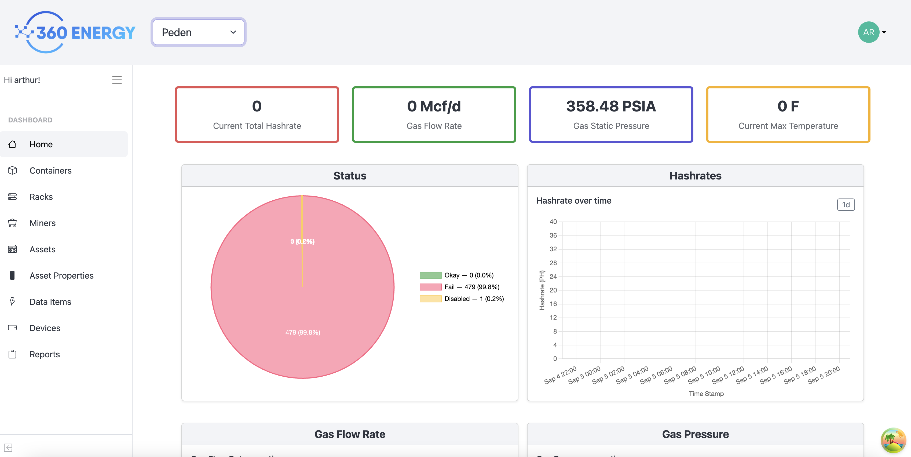
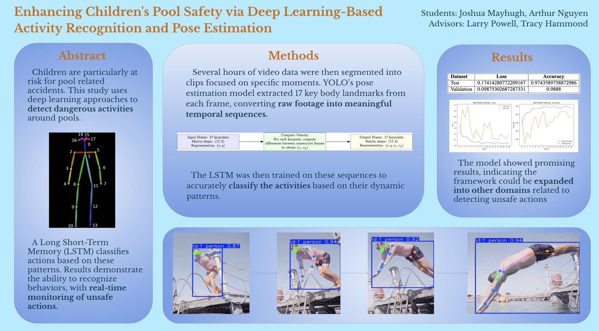
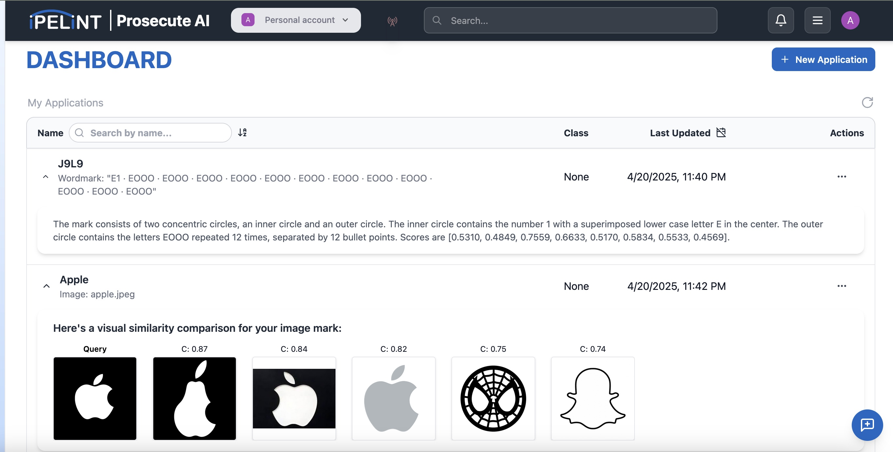
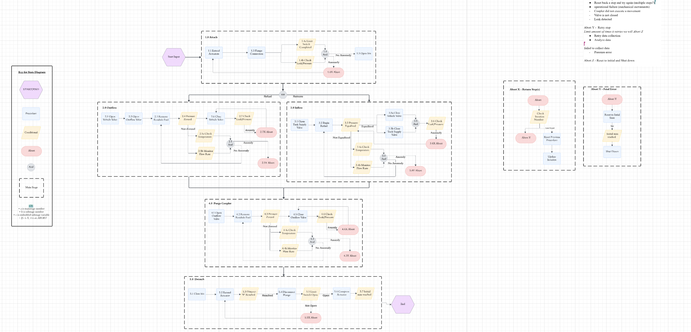

As the full stack developer intern for 360 Energy, a multi-million dollar oil startup needing a webapp to manage data inflow from multiple services that received data from heavy machinery on site, I built an admin dashboard from scratch. This aggregated multiple services into a single webpage and added automatic machinery response functionality, improving data analysis and site efficiency by over 25%! The Tech stack included React, Vite, Bootstrap, Node.js, Express, PostgreSQL, and Auth0, deployed with Docker and AWS infrastructure.

I conducted research on the possibility of using real time computer vision to identify dangerous actions in a pool setting and to benefit swimming education. To do this, I filtered and cleaned a large dataset of videos of swimmers in order to classify swimmer actions and applied long short-term memory model and pose estimation to obtain a 96% accuracy in identifying swimmer actions. This functionality received the 1st Place Award for Best Computer Science Research Poster at Texas A&M's Student Research Week.
This research was conducted under the SRL Sketch Recognition Lab that aims to use computer vision to help with children's education.

I led a 5-person team in collaboration with startup IPELINT to develop a trademark comparison platform to minimize the time needed to submit a trademarking application. It was implemented using a JavaScript/Node.js data scraper to collect and store trademark records from the USPTO website in MongoDB and AWS Buckets, and applied neural models such as ConvNext with FAISS similarity search to compare and retrieve relevant results efficiently.
The project earned 2nd place for best trifold (2024) and finalist for best presentation (2025) at the Aggies Create Innovation Expo, a competitio nrun by Aggies Create, the consulting organization that provides startups with student interns.

For the NASA Human Lander Challenge, I helped design a lunar autonomous fueling coupler. I contributed by building a robust state machine and sensor integration system for the coupler, earning a spot in the top 8 finalists nationwide.
This was done under the AggieSat Laboratory , an student run research lab aiming to create satalites and participate in space related projects.